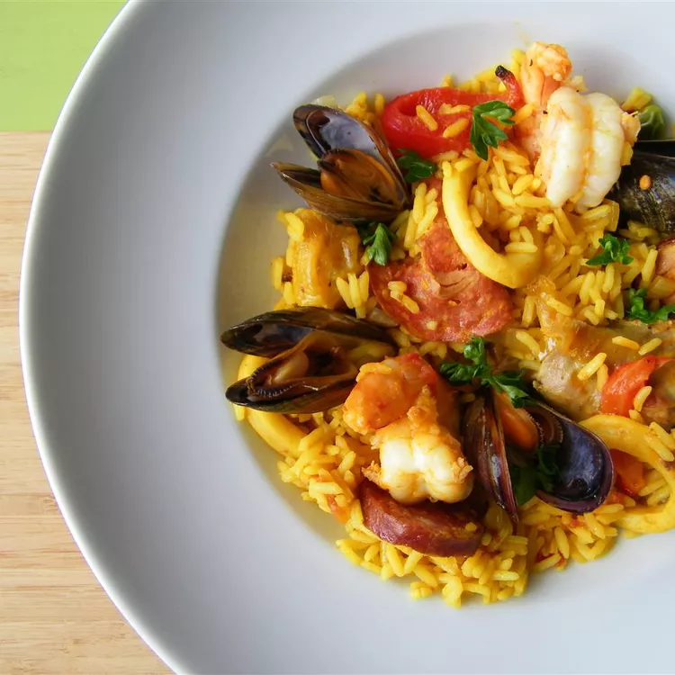

A very traditional Spanish paella, garnished with Spanish chorizo, chicken, squid, mussels, shrimp, and peas. A paella pan is recommended for making and serving this dish.
Heat olive oil in paella pan over medium heat. Add onion, garlic, and pepper; cook and stir for a few minutes. Add chorizo sausage, diced chicken, and rice; cook for 2 to 3 minutes. Stir in 3 ½ cups stock, wine, thyme leaves, and saffron. Season with salt and pepper. Bring to the boil, and simmer for 15 minutes; stir occasionally.
Taste the rice, and check to see if it is cooked. If the rice is uncooked, stir in ½ cup more stock. Continue cooking, stirring occasionally. Stir in additional stock if necessary: use up to 2 cups additional stock, 5 cups total. Cook until rice is done.
Stir in squid, tomatoes, and peas. Cook for 2 minutes. Arrange prawns and mussels on top. Cover with foil, and leave for 3 to 5 minutes.
Remove the foil, and scatter parsley over the food. Serve in paella pan, garnished with lemon wedges.